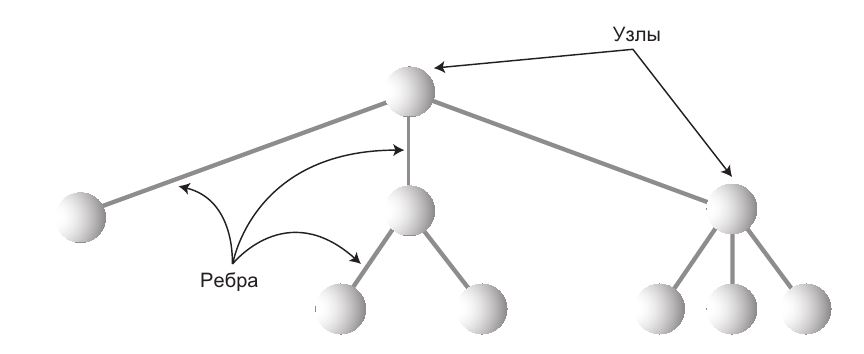
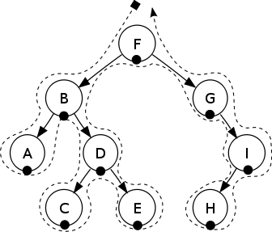
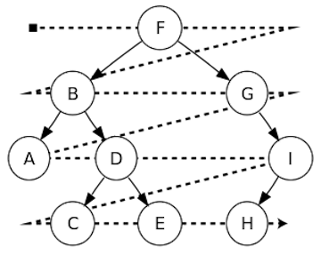

Информатика
Тема 12
Деревья
Агенда
- Как устроено дерево
- Обход дерева
- Двоичное дерево поиска
- Ассоциативные контейнеры
Как устроено дерево
Дерево
Термины

Бинарное (двоичное) дерево
Пример дерева
Дерево каталогов файловой системы
Операции
Обход дерева
Прямой обход в глубину

Узел → Левый → Правый
F, B, A, D, C, E, G, I, H
Симметричный обход в глубину
Левый → Узел → Правый
A, B, C, D, E, F, G, H, I
Обратный обход в глубину

Левый → Правый → Узел
A, C, E, D, B, H, I, G, F
Обход в ширину
Breadth-first search, BFS
F, B, G, A, D, I, C, E, H
Двоичное дерево поиска
Свойство бинарного дерева поиска
Обход по узлам в отсортированном виде — симметричный обход в глубину
Бинарное
дерево поиска
Ассоциативные контейнеры
Ассоциативные контейнеры
на деревьях